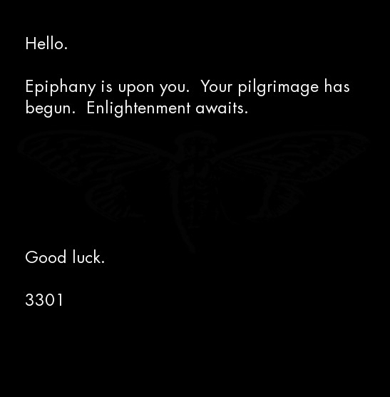

The 2014 opening image and its hidden message
The original zN4h51m.jpg, verified OutGuess content, and the route through Emerson to the compasses cover.
On this page
The opening image of the archived 2014 route is a dark JPEG with a greeting, a pilgrimage announcement, a faint insect-like figure and the number 3301. Its archive filename is zN4h51m.jpg. Unlike a numbered Liber Primus page, its role here is to introduce the route that leads to the manuscript.

Download the original JPEG · Provenance and verification evidence

The visible image and hidden message
The visible text announces the beginning of a journey. The hidden OutGuess message supplies something operational: a short riddle, fifteen four-part coordinates, and several literal characters. The Self-Reliance guide shows how those coordinates select letters from Emerson’s essay.
The extraction was reproduced on 20 October 2026 and recovered exactly 1,150 bytes. The clear-signed block verified with GnuPG 2.5.21 against the recorded Cicada fingerprint, in an isolated keyring without a digest-policy override. Signature verification authenticates the signed message against that key; it does not sign the entire JPEG or establish a real-world author.
Full extraction · Signed block · Readable body
Reproduce the extraction and lookup
Extract the reference data and original images into the same folder. With OutGuess installed, run:
python scripts/extract_payload.py opening-2014 --outguess outguess --output opening.binThe wrapper checks the input JPEG and the recovered output before writing a new file. Expected output: 1,150 bytes with SHA-256 cba64781bd461b17039316ef97426f912aae987fde131f62e883f7f9e9f0118e. It refuses to overwrite an existing file.
Prepare the isolated keyring using the signature guide, then verify the preserved block:
gpg --no-options --homedir verify-keyring --no-auto-key-retrieve --status-fd 1 --verify exports/steganography/opening-2014.signed.ascThe expected VALIDSIG fingerprint is 6D854CD7933322A601C3286D181F01E57A35090F. Next run python scripts/reproduce_emerson.py. That script reads the coordinates from the extracted body, checks its checksum and reproduces every lookup. It does not invoke GnuPG itself.
How the early steps connect
- This opening image carries the riddle and coordinates.
- The Emerson book cipher yields the historical address where the compasses collage appeared.
- The collage contains a different signed message, with RSA parameters and encrypted bytes.
- The RSA replay recovers the next historical address using published factors.
These are earlier puzzle artifacts, separate from the 75 numbered manuscript records. The source image is preserved from the pinned community archive; the same archive’s walkthrough documents the route. Reproducing it does not require visiting the historical services.